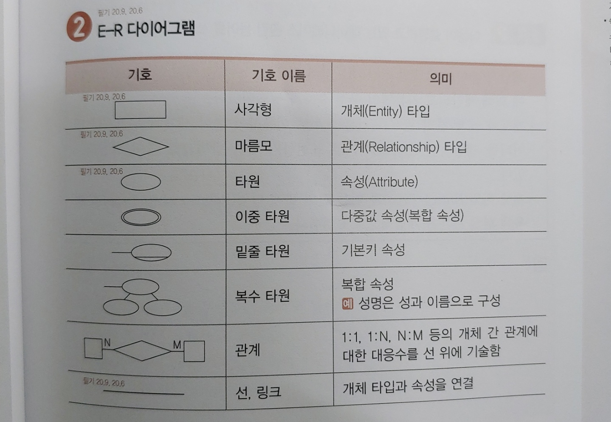
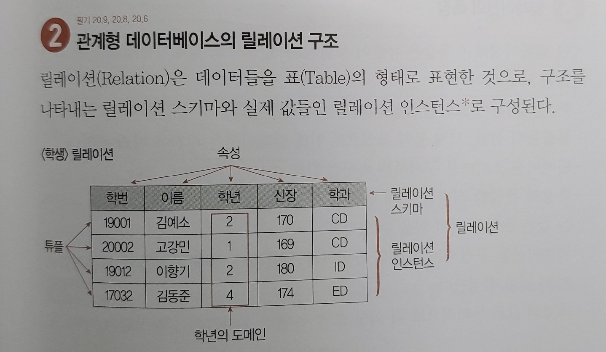
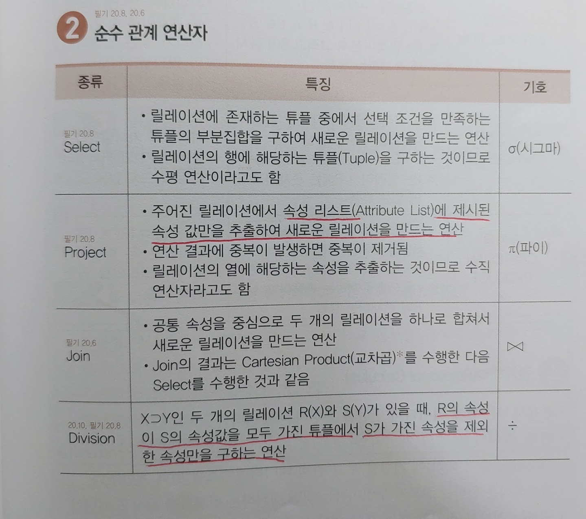
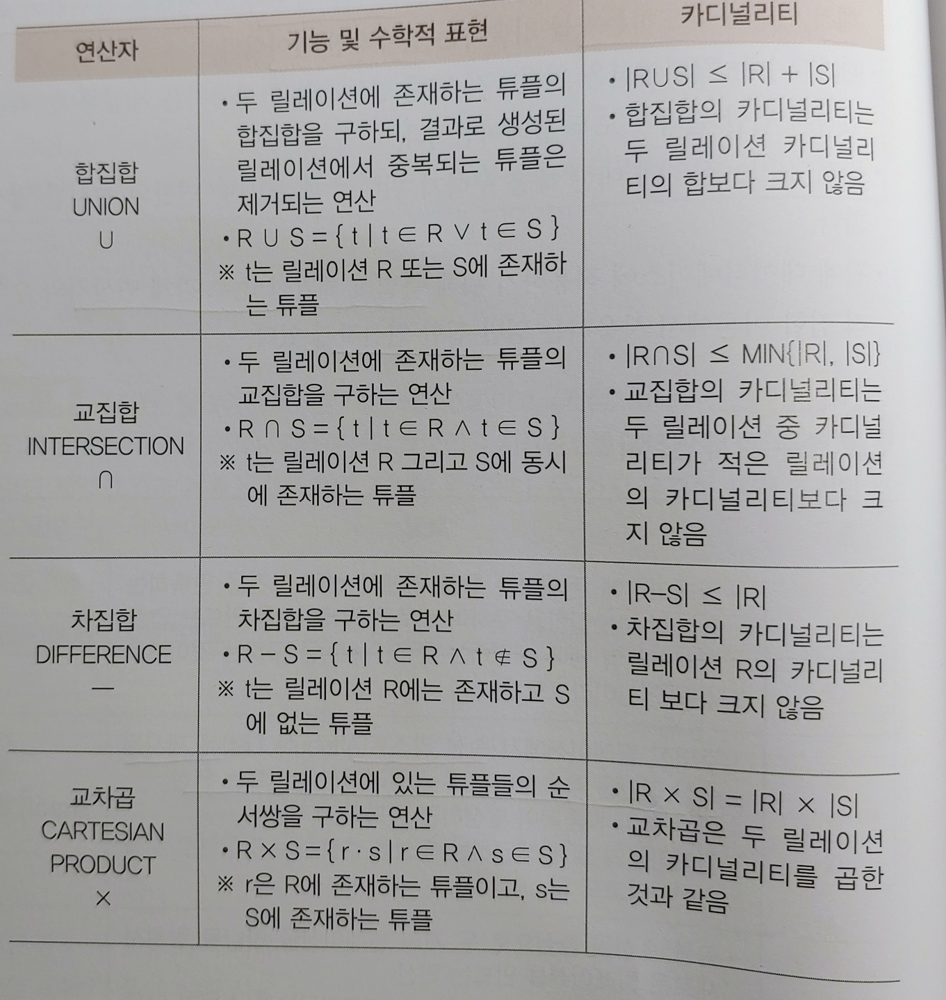
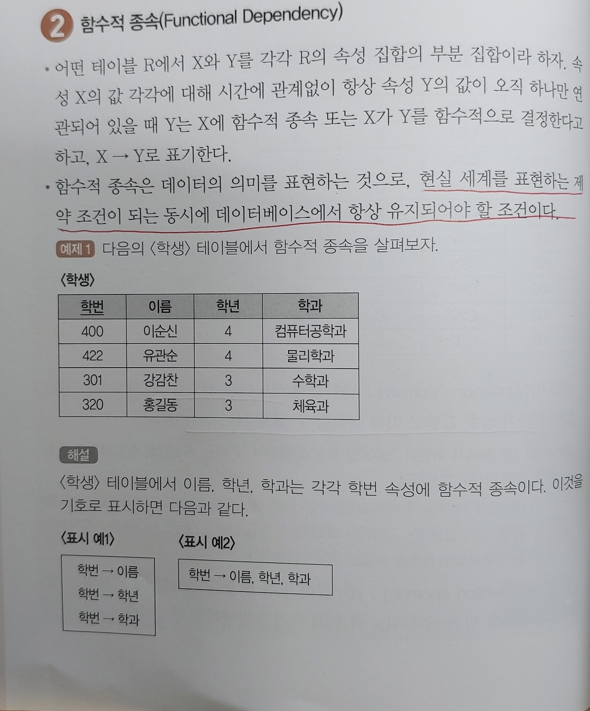
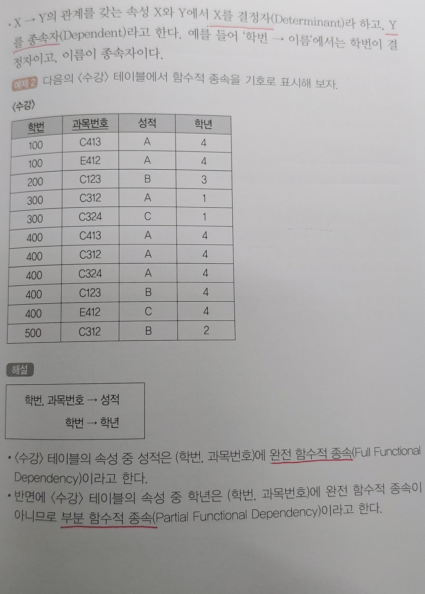

현실세계의 무질서한 데이터를 개념적인 논리 데이터로 표현하기 위한 방법
1976년 피터 첸에 의해 제안되었음
개념적 데이터 모델의 가장 대표적인 것
E-R 모델에서는 데이터를 개체, 관계, 속성으로 묘사함


릴레이션을 구성하는 각각의 행
튜플의 수를 카디널리티 또는 기수 라고 함
데이터 베이스를 구성하는 가장 작은 논리적 단위
속성의 수를 디그리(Degree) 또는 차수라고 함
하나의 애트리뷰트가 취할 수 있는 같은 타입의 원자값들의 집합
릴레이션에 포함된 튜플들은 모두 상이하다
튜플 사이에는 순서가 없다
속성들의 순서는 중요하지 않다
튜플들의 삽입, 삭제로 릴레이션은 시간에 따라 변한다
속성의 값은 논리적으로 원자값만을 저장한다
데이터베이스에서 조건을 만족하는 튜플을 찾거나 순서대로 정렬할 때 기준이 되는 속성
속성들 중에서 튜플을 유일하게 식별하기 위해 사용되는 속성들의 부분집합
유일성과 최소성을 만족시켜야 함
하나의 키 값으로 하나의 튜플만을 유일하게 식별
키를 구성하는 속성 하나를 제거하면 유일하게 식별할 수 없도록 최소한의 속성으로 구성
후보키 중에서 선정된 주키
중복값을 가질 수 없다
NULL값을 가질 수 없다
후보키가 둘 이상일 때 기본키를 제외한 나머지 후보키
한 릴레이션 내에 있는 속성들의 집합으로 구성된 키
유일성 만족o, 최소성 만족x
다른 릴레이션의 기본키를 참조하는 속성 또는 속성들의 집합
데이터베이스에 저장된 데이터값과 현실세계의 실제값이 일치하는 정확성
쉽게말해서, 저장된 데이터베이스에 잘못된 데이터가 없다는 것
기본키를 구성하는 어떤 속성도 NULL값이나 중복값을 가질 수 없다
외래키값은 NULL이거나 참조 릴레이션의 기본키 값과 동일해야 한다
주어진 속성 값이 정의된 도메인에 속한 값이어야 한다
속성 값들이 사용자가 정의한 제약조건에 만족되어야 한다
릴레이션의 특정 속성 값이 NULL이 될 수 없도록 하는 규정
릴레이션의 특정 속성에 대해 튜플들이 갖는 속성 값들이 서로 달라야 한다
하나의 릴레이션에는 적어도 하나의 키가 존재한다
릴레이션에 어느 한 튜플의 삽입 가능 여부
한 릴레이션과 다른 릴레이션의 튜플들 사이의 관계에 대한 적절성 여부
| 종류 | 내용 |
|---|---|
| 애플리케이션 | 무결성 조건을 검증하는 코드를 프로그램 내에 추가함 |
| 데이터베이스 트리거 | 트리거 이벤트에 무결성 조건을 실행하는 절차형 SQL을 추가함 |
| 제약 조건 | 데이터베이스 제약조건을 설정하여 무결성 유지 |
관계형 데이터베이스에서 원하는 정보와 그 정보를 검색하기 위해 어떻게 유도하는가를 기술하는 절차적인 언어
순수관계연산자와 일반 집합 연산자가 있다


데이터를 삽입할 때 의도치 않게 원하지 않는 값들로 인해 삽입할 수 없게 되는 현상
한 튜플을 삭제할 때 의도치 않게 상관없는 값들도 함께 삭제되는 현상
튜플에 있는 속성 값을 갱신할 때 일부 튜플의 정보만 갱신되어 정보에 불일치성이 생기는 현상


가능한 한 중복을 제거하여 이상의 발생 가능성을 줄이기 위해 테이블을 무손실 분해하는 과정
책 참고
두개의 테이블이 조인되어 사용되는 경우가 많을 경우 성능 향상을 위해 하나의 테이블로 만들어 사용하는 것
테이블을 수직 또는 수평으로 분할 하는 것
| 방법 | 내용 |
|---|---|
| 수평 분할 | 레코드를 기준으로 테이블을 분할하는 것 |
| 수직 분할 | 하나의 테이블에 속성이 너무 많을 경우 속성을 기준으로 테이블을 분할 하는 것 |
작업의 효율성을 증가시키기 위해 테이블을 추가하는 것
| 방법 | 내용 |
|---|---|
| 집계 테이블의 추가 | 집계 데이터를 위한 테이블을 생성하고 각 원본 테이블에 트리거를 설정하여 사용하는 것 |
| 진행 테이블의 추가 | 이력 관리 등의 목적으로 추가하는 테이블 |
| 특정 부분만을 포함하는 테이블의 추가 | 테이블의 특정 부분만으로 새로운 테이블을 생성 |